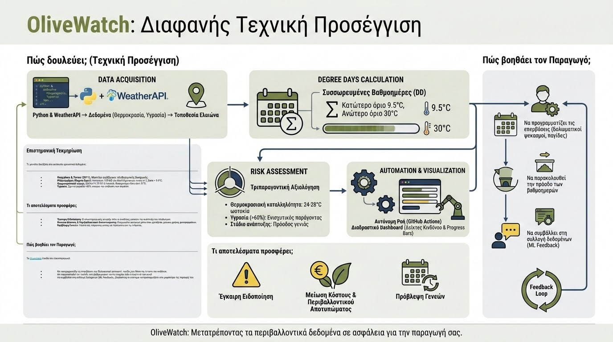

Το OliveWatch είναι μια ψηφιακή εφαρμογή Γεωργίας Ακριβείας (Precision Agriculture) που σχεδιάστηκε για την έγκαιρη πρόβλεψη του δάκου της ελιάς (Bactrocera oleae). Βασίζεται στο επιστημονικά τεκμηριωμένο μοντέλο των Gonçalves & Torres (2011) και υπολογίζει την ανάπτυξη του πληθυσμού μέσω συσσωρευμένων βαθμοημερών (Degree Days).

Πώς δουλεύει; (Τεχνική Προσέγγιση)
Η εφαρμογή λειτουργεί μέσω μιας αυτοματοποιημένης ροής δεδομένων (Pipeline):
- Data Acquisition: Μέσω Python και WeatherAPI, το σύστημα αντλεί δεδομένα (θερμοκρασία, υγρασία) για την ακριβή τοποθεσία του ελαιώνα.
- Degree Days Calculation: Υπολογισμός συσσωρευμένων βαθμοημερών με βάση το κατώτερο όριο των 9.5°C και ανώτερο όριο των 30°C.
- Risk Assessment: Τριπαραγοντική αξιολόγηση κινδύνου που συνδυάζει:
- Θερμοκρασιακή καταλληλότητα: 24-28°C ιδανική για ωοτοκία.
- Υγρασία (>60%): Ενισχυτικός παράγοντας για επιβίωση ενηλίκων.
- Στάδιο ανάπτυξης: Πρόοδος γενιάς βάσει DD.
- Visualization: Τα αποτελέσματα οπτικοποιούνται σε ένα διαδραστικό dashboard με έγχρωμους δείκτες κινδύνου και progress bar για τις βαθμοημέρες.
- Automation: Το σύστημα μπορεί να τρέχει αυτόνομα μέσω GitHub Actions, προσφέροντας καθημερινές ενημερώσεις.
Επιστημονική Τεκμηρίωση
Το μοντέλο βασίζεται στα ακόλουθα ερευνητικά δεδομένα:
- Gonçalves & Torres (2011): Μοντέλο πρόβλεψης πληθυσμιακής δυναμικής του δάκου.
- Βαθμοημέρες (Degree Days): Συσσώρευση 350 DD για ολοκλήρωση μιας γενιάς με T_base = 9.5°C.
- Θερμοκρασιακό εύρος: Βέλτιστο 24-28°C για ωοτοκία, θνησιμότητα πάνω από 30°C.
- Υγρασία: Σχετική υγρασία >60% ενισχύει την επιβίωση των ακμαίων.
Τι αποτελέσματα προσφέρει;
- Έγκαιρη Ειδοποίηση: Ο ελαιοπαραγωγός γνωρίζει πότε οι συνθήκες ευνοούν την ανάπτυξη του πληθυσμού.
- Μείωση Κόστους & Περιβαλλοντικού Αποτυπώματος: Στοχευμένοι ψεκασμοί μόνο όταν χρειάζεται, μείωση χρήσης φυτοφαρμάκων.
- Πρόβλεψη Γενεών: Γνώση της τρέχουσας γενιάς και πρόγνωση για τις επόμενες.
Πώς βοηθάει τον Παραγωγό;
Το OliveWatch βοηθά τον ελαιοπαραγωγό:
- Να προγραμματίζει τις επεμβάσεις του (δολωματικοί ψεκασμοί, παγίδες) με βάση την ένταση του κινδύνου.
- Να παρακολουθεί την πρόοδο των βαθμοημερών και να γνωρίζει πότε αναμένεται νέα γενιά.
- Να συμβάλλει στη συλλογή δεδομένων (ML Feedback), βοηθώντας το σύστημα να προσαρμόζεται στο μικροκλίμα της περιοχής του.
← Επιστροφή στο Portfolio